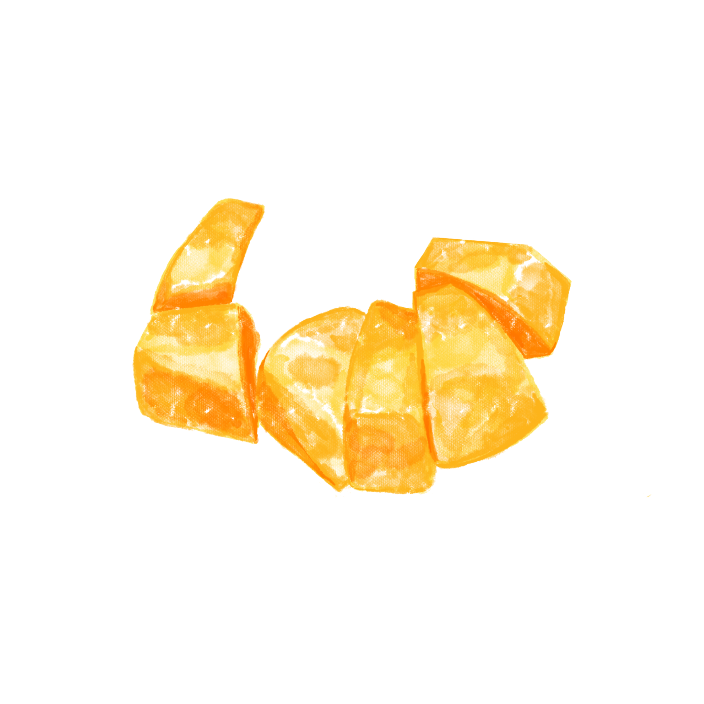
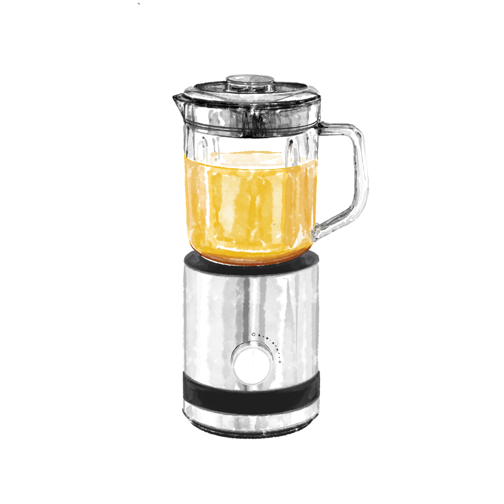

1
늙은 호박을 4등분 해준 다음, 안에 있는 씨&태좌를 긁어준다.
2
냄비에 물 1.4L에 씨와 태좌를 넣고 센불에서 20분 동안 끓여 육수를 만들어준다.

3
늙은 호박을 살짝 익혀준 뒤 껍질을 벗기고 적당한 크기로 썰어준다.
4
냄비에 호박과 육수를 넣고 센불 5분 + 중불 20분 삶아준다.

5
도깨비방망이 or 믹서기로 곱게 갈아준다.
6
다시 중불에 얹어 끓으면 찹쌀물을 붓고 2분 더 끓여준다.
7
그 뒤 꿀 & 꽃소금을 넣고 잘 섞어준 다음 2~3분 더 끓여주면 완성.